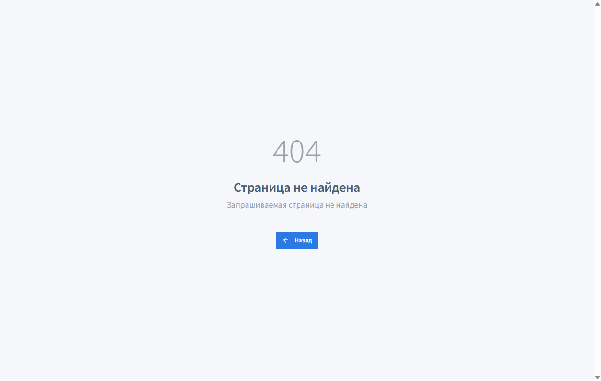

Факт
Свежий QA по live-домену завершился FAIL / NO_GO. Админка открывается в авторизованной admin-сессии, но внутри найдены подтвержденные дефекты в Cities/Countries grids и Plugins.
Live Confideline QA · 2026-05-23 · https://confideline.com
Проверялся именно live-домен https://confideline.com, не локальная копия проекта. Актуальный проход по PHP 8.5 включает авторизованный admin-аудит: read-only разделы, поиск/сортировка/пагинация, plugin pages и локальный syntax lint admin-модуля.
Свежий QA по live-домену завершился FAIL / NO_GO. Админка открывается в авторизованной admin-сессии, но внутри найдены подтвержденные дефекты в Cities/Countries grids и Plugins.
Публичный browser smoke и human-paced customer journey теперь проходят: главная, login/signup формы и базовые legal/trust маршруты открываются на desktop и mobile.
Правильный flow подтвержден: авторизованная admin-сессия открывает /ru/admin/geoname/index как Manage cities. Блокер Manhattan снят. Внутри админки найдены новые live-дефекты: Cities search #8192, query-ссылки 404 и Plugins #8192.
Live-синтаксис напрямую не виден без серверных логов. Дополнительно локальный source-снимок: общий lint 861 PHP-файл и отдельный admin lint 215 PHP-файлов прошли без parse errors. PHP CLI локально 8.1, поэтому это вспомогательный слой, не замена live PHP 8.5 ретеста.
| Зона | Статус | Что проверено на live | Вывод |
|---|---|---|---|
| PHP/runtime | PASS | /, /en, /ru, /en/login, /en/signup отдают X-Powered-By: PHP/8.5.0. |
Live работает на PHP 8.5.0; результаты ниже относятся к этому runtime. |
| Публичные маршруты | PASS | /en, /en/login, /en/signup, recovery, terms, privacy, cookie, about. |
Базовая клиентская навигация и формы доступны, browser smoke 6/6 PASS, human journey 2/2 PASS. |
| Админка | FAIL | Авторизованная super-admin сессия через Manhattan. Базовый /ru/admin/geoname/index открывается как Manage cities; read-only matrix покрыла 39 admin URL. |
Админка доступна правильным способом, но внутри найдены рабочие дефекты: Cities/Countries query links, Cities name search и Plugins. |
| Admin read-only menu | FAIL | 39 безопасных admin URL из меню и read-only inventory: dashboard, users, finance/order, support, groups, messages, photos, pages, reports, verifications, gifts, bans, settings, country/city, logs, queues/cache/websocket, plugins. | 37/39 PASS. /ru/admin/plugin/index и /ru/admin/plugin/browse возвращают HTTP 500 / Ошибка (#8192). Country index работает, первоначальный WARN был ложным текстовым срабатыванием на ID. |
| Admin Cities/Countries UX | FAIL | /ru/admin/geoname/index?GeonameSearch[name]=Munich, URL-like value, country mix, grid Enter submit, ?sort=name, ?page=2, /ru/admin/country/index?sort=countryCode. |
Direct name search падает #8192; UI filter оставляет Munich в поле, но показывает прежние 589 978 записей; sort/page query links ведут на 404. |
| Accessibility | FAIL | Axe smoke на /en, /en/login, /en/signup в desktop/mobile. |
6/6 checks FAIL: critical button-name на alert close и serious contrast/link issues. |
| Analytics runtime | WARN | Браузерный capture на /en?utm_source=qa-runtime.... |
Страница загружается, но ожидаемые события ad_click_session_start, lp_view, trust_block_view, starter_price_view не пойманы; есть только Meta Pixel init/PageView. |
| Security headers | WARN | Live headers главной страницы. | Нет baseline headers: Strict-Transport-Security, X-Frame-Options, X-Content-Type-Options, Referrer-Policy. |
| Performance/security tooling | BLOCKED | k6 и ZAP passive baseline. | k6/ZAP CLI не установлены, Docker CLI есть, но daemon не запущен. Это блокер тестового контура, не доказанный дефект сайта. |
Активный Manhattan handoff был закрыт и возвращен в фон. После этого /ru/admin/geoname/index открылся в авторизованной admin-сессии как Manage cities, без login form и без 404.
Проверено 39 безопасных admin URL. 37 открываются без серверной ошибки. 2 подтвержденных FAIL: /ru/admin/plugin/index и /ru/admin/plugin/browse дают HTTP 500 / Ошибка (#8192).
Базовые Countries и Cities открываются. Но grid-функции ломаются: поиск Munich через query дает #8192, Enter submit не фильтрует, сортировка и пагинация через query ведут на 404.
DELETE, enable/disable, install/update/uninstall, save settings, bans, moderation approve/reject и другие live-mutations не выполнялись без QA-фикстуры и rollback. Они помечены как BLOCKED_BY_RISK, а не как PASS.
| Сценарий | Статус | Факт | Evidence |
|---|---|---|---|
| Base Cities | PASS | /ru/admin/geoname/index показывает 1-20 из 589 978. |
screenshot, json |
| Search Munich direct | FAIL | GeonameSearch[name]=Munich возвращает Ошибка (#8192). |
screenshot |
| Search URL-like value | FAIL | URL-like value в GeonameSearch[name] тоже возвращает Ошибка (#8192). |
screenshot |
| Grid Enter submit | FAIL | После Enter URL содержит GeonameSearch[name]=Munich, но таблица остается 1-20 из 589 978 с прежними первыми строками. |
screenshot |
| Sort / pagination query | FAIL | /ru/admin/geoname/index?sort=name, ?page=2 и /ru/admin/country/index?sort=countryCode открывают Not Found (#404). |
screenshot |
| Plugins | FAIL | /ru/admin/plugin/index и /ru/admin/plugin/browse возвращают HTTP 500 / Ошибка (#8192). |
index, browse |
| Admin PHP lint | PASS | 215 PHP-файлов admin-модуля прошли php -l локальным PHP 8.1 CLI без parse errors. |
json |
| Приоритет | Статус | Зона | Факт | Что поправить | Как ретестить |
|---|---|---|---|---|---|
| P0 | FAIL | Admin / Cities search | В авторизованной админке /ru/admin/geoname/index?GeonameSearch[name]=Munich стабильно возвращает Ошибка (#8192). То же для URL-like значения и mixed country query. |
Проверить live/custom GeonameSearch, GridView/Pjax/filter form и Yii2 query parsing после PHP 8.5. Ожидаемое поведение: поиск по имени не должен давать 500; Munich должен фильтровать строки или показывать чистый empty state. |
Ретест: открыть /ru/admin/geoname/index как admin, ввести Munich в колонку "ИМЯ", нажать Enter; отдельно открыть direct URL с GeonameSearch[name]=Munich. Ожидание: нет #8192, результат фильтруется. |
| P1 | FAIL | Admin / Grid query links | Ссылки сортировки/пагинации в Cities/Countries ведут на 404: /ru/admin/geoname/index?sort=name, /ru/admin/geoname/index?page=2, /ru/admin/country/index?sort=countryCode. |
Проверить urlManager/rules для admin grid query params и генерацию ссылок GridView. Query params не должны выводить из admin module на generic 404. | Ретест: кликнуть заголовок "ИМЯ" в Cities, перейти на страницу 2, кликнуть sort в Countries. Ожидание: остается admin layout и меняется порядок/страница. |
| P1 | FAIL | Admin / Plugins | /ru/admin/plugin/index и /ru/admin/plugin/browse возвращают HTTP 500 / Ошибка (#8192) в авторизованной admin-сессии. |
Проверить PluginController::actionIndex(), actionBrowse(), pluginManager, pluginInstaller, views admin/views/plugin/* и PHP 8.5 compatibility внешнего plugin catalog/provider. |
Ретест: открыть оба URL из левого меню "Плагины". Ожидание: список установленных/доступных plugins или контролируемый empty/error state без 500. |
| P2 | WARN | Admin / Sidebar parent links | В DOM родительские пункты с подпунктами рендерятся как /ru/admin/geoname/%7Burl%7D или аналогичный {url} placeholder на текущем route. Основной click может перехватываться JS, но open-in-new-tab/keyboard route будет некорректным. |
Проверить app\modules\admin\widgets\Menu::renderItem(): для item с items и без url шаблон содержит {url}, но replacement не задается. |
Ретест: на любой admin странице проверить DOM href родительских пунктов "Финансы", "Сообщения", "Countries & Cities", "Логи", "Поля профиля"; не должно быть {url}. |
| P0 | FAIL | Accessibility | Axe падает на всех 6 public checks. На /en: button[data-dismiss="alert"] без accessible name, contrast у .container > a, .btn-male, .btn-female. На login/signup: contrast и link-in-text-block. |
В live theme/CSS/markup добавить имя кнопке закрытия alert и поправить контраст ссылок/кнопок/terms-блока. Не закрывать по source-only proof, пока live axe не зеленый. | Ретест: Invoke-ConfidelineBrowserQa.ps1 -SkipInstall. Ожидание: playwright-accessibility-output.txt без axe violations. |
| P1 | WARN | Analytics runtime | На live captured только fbq init и fbq PageView. Ожидаемые launch/conversion events не пойманы, overall=NOT_PROVEN. |
Проверить подключение runtime analytics bridge на live, порядок событий и реальные beacons. Schema/source готовность не считать conversion truth. | Ретест: Invoke-ConfidelineAnalyticsRuntimeQa.ps1 -SkipInstall. Готово только при overall=RUNTIME_PROVEN. |
| P1 | WARN | Security headers | На live отсутствуют HSTS, X-Frame-Options, X-Content-Type-Options, Referrer-Policy. | Определить, где должны выставляться headers: Yii2, web server, hosting edge или Cloudflare. Включить безопасно, без поломки legacy UI. | Повторить live HEAD/QA; закрывать только когда headers реально есть в ответах https://confideline.com/en. |
| P1 | BLOCKED | k6/ZAP | Performance/security passive gates не выполнены: Docker daemon недоступен, k6/ZAP CLI отсутствуют. | Запустить Docker Desktop daemon или установить локальные k6/ZAP CLI. Это нужно для доказательства нагрузки и passive security, но не является найденным PHP-багом. | Ретест: Invoke-ConfidelinePerformanceQa.ps1 и Invoke-ConfidelineSecurityPassiveQa.ps1. |
| P2 | WARN | Brand/title | Главная live-страница имеет title Welcome to YouDate!. |
Синхронизировать Confideline branding на live или зафиксировать сознательное исключение. | Ретест: title/meta на https://confideline.com/en больше не содержат legacy YouDate. |
6/6 browser checks прошли: главная, login и signup доступны на desktop/mobile; поля форм найдены.
2/2 сценария прошли: пользователь нормальной скоростью открывает landing, legal trust links, login и signup без fast-click поведения.
Terms, Privacy, Cookie и About возвращают 200 и содержат ожидаемые trust/legal keywords.
На live public routes не пойманы 500. В локальном source-снимке 861 PHP-файл прошел php -l без syntax errors.

GeonameSearch[name]=Munich возвращает внутреннюю ошибку сервера.

/ru/admin/geoname/index?sort=name выводит generic 404.

/ru/admin/plugin/index возвращает HTTP 500 / Ошибка (#8192).
| Файл | Что доказывает |
|---|---|
| admin-live-audit-summary-20260523.json | Кураторская сводка нового admin-аудита: NO_GO, corrected matrix, findings, not-executed mutation boundary. |
| geoname-munich-reproduction-20260523.json | Авторизованная live reproduction matrix для Cities: base PASS, Munich/URL-like FAIL #8192, UI Enter submit не фильтрует, global search не падает. |
| admin-readonly-matrix-20260523.json | 39 read-only admin URL через авторизованную Manhattan-сессию: 37 PASS, 2 FAIL на Plugins. |
| admin-grid-surface-discovery-20260523.json | DOM discovery по admin grids: filter inputs, sort links, pagination links, action link inventory. |
| admin-action-inventory.json | Source/live admin action inventory: 102 actions, из них 35 read-only, 29 form/mutating, 38 mutating. |
| admin-php-lint-20260523.json | Локальный syntax lint admin-модуля: 215 PHP-файлов, 0 parse errors, PHP CLI 8.1. |
| playwright-public-smoke-output.txt | 6/6 public browser smoke passed. |
| playwright-human-journey-output.txt | 2/2 human-paced customer journey passed. |
| playwright-accessibility-output.txt | Конкретные axe violations и selectors для исправления. |
| analytics-runtime-summary.json | Analytics runtime NOT_PROVEN: ожидаемые события не пойманы. |
| source-php-lint-local-php81-20260523.json | Вспомогательная локальная проверка source syntax: 861 PHP-файл, 0 failures. Не является доказательством live-деплоя. |
{kind=link}
{kind=link}
{kind=link}
{kind=link}
{kind=link}